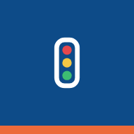

Casca
Mude a largura da janela: lateral de 240px a partir de 1024px, recolhida em 56px de 768 a 1023px, e cabeçalho com barra inferior abaixo de 768px.
Bordo · tema escuro · vários navios (seletor com seta)
Conveses
Bram PowerConveses
22 de 49 leitos ocupados no convés principal.
Você não tem acesso a Despacho
Peça acesso ao administrador do Bordo.
Paradas · tema claro · um navio só (seletor fixo) · com fila offline
12/10
Bram Power12/10
38 serviços, 6 em andamento.
Menu do seletor, menu da conta e paleta de comandos (abertos)
Folha do "Mais" (aberta) · tema claro · a seção aberta (Tabela Mestra) mora nele
Mais
Tipografia
Visão geral
Requisições em aberto
Pendências da embarcação
Corpo padrão: 22 de 49 leitos ocupados no convés principal.
Legenda: atualizado há 4 minutos.
Rótulo de campo
materiais.estoque.contagens.aprovar
Botões e campos
Janelas
Diálogo de confirmação (440px) e de formulário (640px; abaixo de 768px, tela cheia), toasts de sucesso com barra de tempo (pausa com o mouse; recarregue para ver de novo) e de erro, e Painel lateral (abaixo de 1024px, folha de 90%). Cada moldura faz o papel da tela.
Tema escuro
Remover o dia 14/10?
As atividades e os relatórios do dia somem para todas as estações. Não dá para desfazer.
Encerrar TT
Tema claro
Remover o dia 14/10?
As atividades e os relatórios do dia somem para todas as estações. Não dá para desfazer.
Encerrar TT
Telas
Precisa de você (com o miolo do item: estado, identificador, título, contexto e seta; o último sem link), indicadores em 4/2/1 colunas, visões (tablist) e abas de rota (link com aria-current), cartões com o aberto (aria-current), tabela (abaixo de 768px, lista de linhas: a tabela tem td.nome, o rótulo .ov-so-no-celular aparece e a coluna .ov-fora-do-celular some), esqueleto e barra de ações em massa flutuante (data-flutuante). Cada moldura faz o papel da tela.
Tema escuro
- Urgente4521Report urgente da Oceaneeringaberto há 2h · equipe a bordo
- AtençãoJoão Pereira sem leitoembarcou hoje, 08:10
- AtençãoDesembarque previsto de Ana Limaera 16/10 · sem link: quem resolve é o painel
Precisa de você
Nada pendente com você.
- Troca de turma de outubro
Salvo em 18/10 · 42 leitos ocupados - Parada técnica
Salvo em 02/10 · 58 leitos ocupados
| Nome | Função | Empresa | Estado | Dias | Ação | |
|---|---|---|---|---|---|---|
| João Pereira | Mecânico | BRAM | A bordo | 14 dias a bordo | ||
| Ana Lima | Técnica de segurança | Petrobras | Reservado | 3 dias a bordo | ||
| Carlos Souza | Cozinheiro | Sem leito | 1 dia a bordo |
Tema claro
- Urgente4521Report urgente da Oceaneeringaberto há 2h · equipe a bordo
- AtençãoJoão Pereira sem leitoembarcou hoje, 08:10
- AtençãoDesembarque previsto de Ana Limaera 16/10 · sem link: quem resolve é o painel
Precisa de você
Nada pendente com você.
- Troca de turma de outubro
Salvo em 18/10 · 42 leitos ocupados - Parada técnica
Salvo em 02/10 · 58 leitos ocupados
| Nome | Função | Empresa | Estado | Dias | Ação | |
|---|---|---|---|---|---|---|
| João Pereira | Mecânico | BRAM | A bordo | 14 dias a bordo | ||
| Ana Lima | Técnica de segurança | Petrobras | Reservado | 3 dias a bordo | ||
| Carlos Souza | Cozinheiro | Sem leito | 1 dia a bordo |
Estados
Cores
Ícones de PWA
